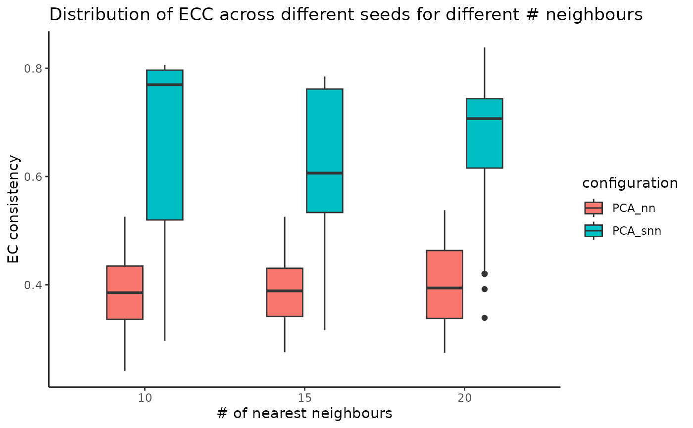

R/stability-2-graph-construction.R
assess_nn_stability.RdEvaluates clustering stability when changing the values of different parameters involved in the graph building step, namely the base embedding, the graph type and the number of neighbours.
A matrix associated with a PCA embedding. Embeddings from other dimensionality reduction techniques (such as LSI) can be used.
A sequence of the number of nearest neighbours.
The number of repetitions of applying the pipeline with different seeds; ignored if seed_sequence is provided by the user.
A custom seed sequence; if the value is NULL, the sequence will be built starting from 1 with a step of 100.
The graph reduction type, denoting if the graph should be built on either the PCA or the UMAP embedding.
The ECS threshold used for merging similar clusterings.
Argument indicating whether the graph should be unweighted (0), weighted (1) or both (2).
Argument indicating whether to prune the SNN graph. If the value is 0, the graph won't be pruned. If the value is between 0 and 1, the edges with weight under the pruning value will be removed. If the value is -1, the highest pruning value will be calculated automatically and used.
An index indicating which community detection algorithm will
be used: Louvain (1), Louvain refined (2), SLM (3) or Leiden (4). More
details can be found in the Seurat's FindClusters function.
A list of arguments that will be passed to the
clustering algorithm. See the FindClusters function in Seurat for more details.
Additional arguments passed to the the uwot::umap method.
A list having three fields:
n_neigh_k_corresp - list containing the number of the clusters obtained by running
the pipeline multiple times with different seed, number of neighbours and graph type (weighted vs unweigted)
n_neigh_ec_consistency - list containing the EC consistency of the partitions obtained
at multiple runs when changing the number of neighbours or the graph type
n_different_partitions - the number of different partitions obtained by each
number of neighbours
set.seed(2024)
# create an artificial PCA embedding
pca_emb <- matrix(runif(100 * 30), nrow = 100, byrow = TRUE)
rownames(pca_emb) <- as.character(1:100)
colnames(pca_emb) <- paste0("PC_", 1:30)
nn_stability_obj <- assess_nn_stability(
embedding = pca_emb,
n_neigh_sequence = c(10, 15, 20),
n_repetitions = 10,
graph_reduction_type = "PCA",
clustering_algorithm = 1
)
plot_n_neigh_ecs(nn_stability_obj)
